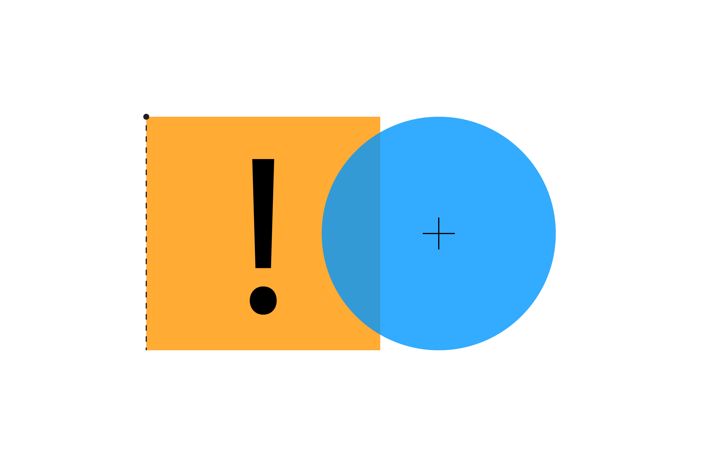

Завдання 2
Ви вже вмієте перевіряти зіткнення найважливіших базових фігур —
точок, кругів та прямокутників! Спробуйте застосувати ці знання на
практиці в таких завданнях:
-
Тепло-холодно (плавна зміна кольору). Зробіть так, щоб
прямокутник у прикладі
«Круг і Прямокутник»
поступово змінював свій відтінок у міру того, як круг наближається до
нього, а під час дотику спалахував яскравим кольором.
Підказка: обчисліть відстань distance
до найближчої точки прямокутника і скористайтеся функцією
map(),
щоб перетворити цю відстань на значення яскравості від
0 до 255, або
функцією
lerpColor()
для плавного змішування двох кольорів.
-
Прямокутники від центра. Усі наші приклади з
прямокутниками працювали в стандартному режимі
rectMode(CORNER),
де (rx, ry) — це лівий верхній кут. Чи
можете ви переписати функції collidePointRect()
та collideRectRect() для режиму
rectMode(CENTER), де
(rx, ry) означає геометричний центр
прямокутника?
Підказка: якщо центр прямокутника лежить у точці
rx, то його лівий край розташований на
півширини лівіше (rx - rw / 2), а правий —
на півширини правіше (rx + rw / 2).
-
Класична гра Pong! Маючи алгоритм зіткнення
круга з прямокутником,
ви знаєте все необхідне для відтворення легендарної аркади
Pong
або гри «Арканоїд» (Breakout)! Створіть круг-м’ячик, який рухається зі
швидкістю speedX та
speedY, і прямокутник-ракетку, якою керує
курсор миші. Коли collideCircleRect() повертає
true, змінюйте напрямок руху м’ячика на
протилежний (speedX = -speedX або
speedY = -speedY).
Далі: Лінія і Точка